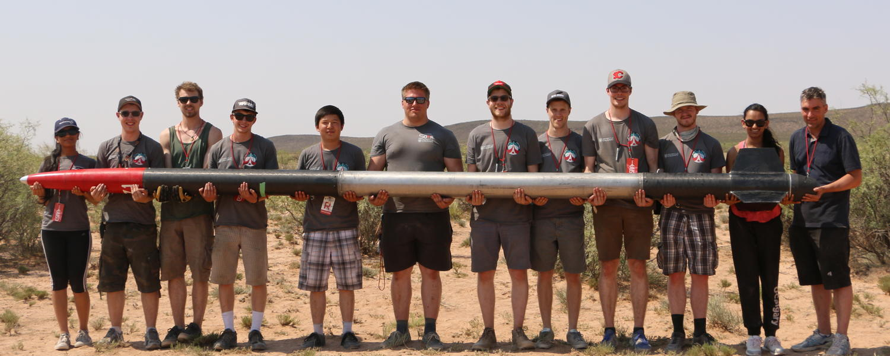

About
Hi, I'm Cody. I'm a software developer/student currently residing in Calgary, Alberta and completing a Bachelor of Science in Computer Science at the University of Calgary. This website has been created as a hands-on avenue to learn web development technologies like Javascript/Typescript/React/HTML/CSS/Docker/etc. Please feel free to check out other projects I've completed by visiting the projects page or by exploring my Github.
Education
I'm currently finishing up my final year in my computer science program with just one semester left to complete before graduation.
Software Development Interests
I've been exposed to a number of different software fields during my experience at university. I've done everything from programming a Breakout style game in ARM Assembly, to building course schedulers in Java, and even implementing simulations using Unity and C#. Because of such a broad array of requirements during my degree I currently don't have a favorite programming language and am eager to dive into whatever languages are required in industry. I enjoy figuring out how low level programming orchestrates programs on hardware, but feel there's a ton of satisfaction in using higher level programming and frameworks to build something a user can interact with.
The concepts that greatly interest me are computer security and privacy, aerospace development, and AI development. Mostly at this point I'm just eager to get into industry and experience a wide variety of development goals to discover my strengths and interests for futher pursuit.
Extra-Curriculars
During my time at university I've been able to participate in numerous organizations. The first organization to really catch my eye was the university's SOAR (The Student Organization for Aerospace Research). This picture was taken during out trip down to New Mexico in the summer of 2016 to participate in the Spaceport America Cup. I was a member of the software team divising the onboard programming to record various flight telemetry. Unfortunately it was such a scorcher that our fuel was melting and we were unable to fly our hybrid rocket.
Another organization I had the pleasure to be a part of was the Student Rhythms club which hosted a weekly drum circle. After attending the club for about a year I decided to run for and was officially elected to the position of VP of Finance in September of 2018. This role had me managing club membership subscriptions and various other financial duties.
Finally I'm currently a participant in the university's Information Security club which holds weekly seminars that discuss and demonstrate various concepts related to computer security. These include binary analysis, cryptography, malware, and various web attacks.
Hobbies/Other Interests
Philosophy
Along with my major in computer science I'm also finishing a minor in philosophy. Philisophically I'm interested in privacy and ethics, asking questions about the role privacy plays in our life today as we move increasingly online.
Outdoorsmanship
All my life I've had experience being in the outdoors and to this day I remain passionate about nature and our environment. These hobbies include camping, hunting, scrambling, hiking, fishing, rock climbing, and anything else you can do in the bush. As a result environmental sustainability is an ideology I hold near and dear. I hope that others will be able to participate in the great outdoors we have here in Canada for many generations to come and to this end I'm immediately interested in any projects and industries which are working towards sustainability.
Music
Believe it or not, but before I decided to pursue a career in computer sciences my heart was set on becoming a professional bass trombonist. Music has always played a huge role in my life and has shaped who I am today. I'm a multi-instrumentalist who has played everything under the sun, but currently consider my main instruments to be the (tenor) saxophone, bass, and guitar, but lately I've been fiddling around with everything from the piano to the recorder. Any industry where I would be able to combine my love of making music with software development would be wonderful.
Others

Honestly I likely have way too many hobbies. I'm able to find something interesting and worthwhile in practically everything I come across. Like most computer oriented professionals a number of my interests fall on the geeky/nerdy side. I've played more than enough Dungeons and Dragons, even DMing weekly games and writing my own campaigns. I've developed an interest in chess. (English opening == Best Opening) I've built my own desktop computer. I try to play Magic: The Gathering on a weekly basis. I love motorbikes and perform all of my own maintenance on them, recently having replaced front fork seals and adjusted my valve lash. Essentially if you can name a hobby it's likely I've dabbled in it.